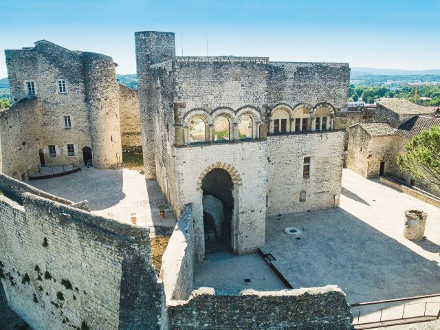

Montélimar, tussen Avignon en Valence, is wereldberoemd om zijn nougat. Op ongeveer 45 minuten van Les Cabritas is het ook een aangename toegangspoort tot de Provençaalse Drôme.

Het Château des Adhémar, een romaans Provençaals juweel
Het Château des Adhémar, hoog boven de stad en in een paar minuten lopen vanuit het centrum te bereiken, werd in de 12e eeuw gebouwd en is een mooi voorbeeld van romaanse Provençaalse architectuur. Het huisvest nu een centrum voor hedendaagse kunst met een sterke regionale reputatie.
De stad van de nougat
Verschillende ambachtelijke ateliers houden de traditie van het nougatmaken levend in het centrum van de stad; sommige bieden gratis rondleidingen door hun productie aan, met name langs de beroemde Provençaalse lanen. Een mooie kans om lokaal vakmanschap te ontdekken en wat lekkers mee naar huis te nemen.
Goed om te weten voor uw bezoek
Het volledig autovrije historische en winkelcentrum herkent u aan de zonnige gevels: de Maison Diane de Poitiers, het Hôtel du Puy Montbrun, het Hôtel de Chabrillan, de collegiale kerk Sainte-Croix en de Porte Saint-Martin zijn allemaal een blik waard. Op zaterdagochtend vult een levendige markt de Place des Clercs, omringd door arcaden en cafés.
Praktische informatie vanuit Les Cabritas
- Afstand vanaf Flaviac: ongeveer 45 min rijden
- Beste periode: het hele jaar, markt op zaterdagochtend
- Ideaal voor: zoetigheden, erfgoed, een stadswandeling
Zin om Montélimar te ontdekken vanuit uw vakantiehuis in de Ardèche?
Les Cabritas verwelkomt u in Flaviac, in het hart van de Ardèche, voor een comfortabel verblijf met privézwembad, vlak bij de mooiste plekken van de streek.
Beschikbaarheid bekijken